OI Wiki · prijevod · Teorija grafovaOI Wiki · translation · Graph theory
Virtualno stabloVirtual tree
Sadržaj
Uvod
„SDOI2011” Rat iscrpljivanja
U jednom ratu bojište se sastoji od \(n\) otoka i \(n-1\) mostova, pri čemu je zajamčeno da između svaka dva otoka postoji točno jedan put. Naša je vojska izvidjela da je neprijateljski stožer na otoku s brojem \(1\) i da neprijatelj više nema dovoljno energije za nastavak borbe; pobjeda je blizu. Poznato je da na drugih \(k\) otoka ima obilje energije; kako neprijatelj ne bi došao do energije, zadatak je naše vojske srušiti neke mostove tako da neprijatelj ne može doći ni do jednog energetski bogatog otoka. Budući da se mostovi razlikuju materijalom i konstrukcijom, rušenje različitih mostova ima različitu cijenu, a naša vojska želi postići cilj uz najmanju ukupnu cijenu.
Izvidnica je otkrila i da neprijatelj ima tajanstveni stroj. Čak i nakon što mu odsiječemo svu energiju, on može upotrijebiti taj stroj. Učinak stroja nije samo popravak svih mostova koje smo srušili, nego i nova slučajna raspodjela resursa (uz jamstvo da resursi neće biti na otoku broj \(1\)). No izvidnica je otkrila i da se stroj može upotrijebiti samo \(m\) puta, pa je dovoljno izvršiti svaki zadatak zasebno.
Za sve podatke vrijedi \(2\le n\le 2.5\times 10^5,1\le m\le 5\times 10^5,\sum k_i\le 5\times 10^5,1\le k_i\le n-1\).
Naivni pristup
Za gornji zadatak lako uočavamo: ako je broj čvorova stabla mali, možemo izravno pokrenuti DP.
Najprije čvorove odabrane u nekom upitu nazovimo „ključnim čvorovima”.
Neka \(Dp(i)\) označava najmanju cijenu da \(i\) ne bude povezan ni s jednim ključnim čvorom u svom podstablu.
Neka \(w(a,b)\) označava težinu brida između \(a\) i \(b\).
Tada za svako dijete \(v\) čvora \(i\):
- ako \(v\) nije ključni čvor: \(Dp(i)=Dp(i) + \min \{Dp(v),w(i,v)\}\);
- ako \(v\) jest ključni čvor: \(Dp(i)=Dp(i) + w(i,v)\).
Odlično, tako dobivamo kôd složenosti \(O(nq)\).
Zvuči zanimljivo.
Optimizirani pristup
Lako uočavamo da je zapravo mnogo čvorova beskorisno. Uzmimo za primjer sliku:
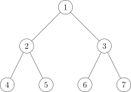
Ako su odabrani ključni čvorovi:
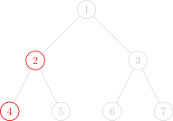
Na slici su samo dva crvena čvora ključni čvorovi, a svi ostali su „neključni čvorovi”.
Za ovaj zadatak dovoljno je osigurati da crveni čvorovi ne mogu doći do čvora \(1\).
Promatranjem golim okom zaključujemo: desno podstablo čvora \(1\) (iako podstabala može biti više, ovdje su samo dva pa ćemo ga privremeno tako zvati) nema nijedan crveni čvor, pa nema potrebe raditi DP po njemu.
Pogledamo li uvjete zadatka, ukupan broj crvenih (ključnih) čvorova istog je reda kao \(n\), odnosno u jednom su upitu crveni čvorovi vrlo rijetki u odnosu na cijelo stablo; bilo bi lijepo kad bi složenost ovisila o ukupnom broju crvenih čvorova.
Stoga trebamo sažeti informacije, cijelo veliko stablo sažeti u malo stablo.
Virtualno stablo (Virtual Tree)
Time dolazimo do pojma „virtualnog stabla”.
Pogledajmo najprije intuitivno kako virtualno stablo izgleda.
Na slikama u nastavku crveni su čvorovi odabrani ključni čvorovi. Crveni i crni čvorovi su čvorovi virtualnog stabla. Crni bridovi su bridovi virtualnog stabla.
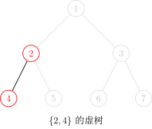
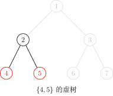
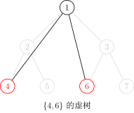
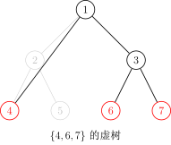
Budući da i LCA bilo koja dva ključna čvora nosi važne informacije, treba sačuvati i njihove LCA-ove; stoga virtualno stablo ne sadrži nužno samo ključne čvorove.
Lako se vidi da se odnosi predak–potomak u virtualnom stablu ne mijenjaju. (Dakle, ne može se dogoditi nešto čudno poput toga da je \(a\) izvorno bio predak od \(b\), a poslije \(a\) postane potomak od \(b\).)
No ne možemo LCA-ove nabrajati grubo u \(O(k^2)\), pa se lako dosjetimo: najprije ključne čvorove sortiramo po DFS poretku, a zatim za svaka dva susjedna ključna čvora (susjedna znači da im se indeksi u sortiranom nizu razlikuju za 1) izračunamo LCA i dodamo ga u virtualno stablo.
Sada je ključno pitanje kako konstruirati virtualno stablo.
Prije nego što predložimo postupak, utvrdimo jednu činjenicu: u virtualno stablo možemo po volji dodavati čvorove, dok god se odnosi predak–potomak ne mijenjaju.
Drugim riječima, kad bismo htjeli, mogli bismo sve čvorove izvornog stabla dodati u virtualno stablo i ne bismo dobili WA (iako bismo dobili TLE).
Stoga radi jednostavnosti možemo najprije dodati čvor \(1\) u virtualno stablo, a to ne utječe na odgovor.
Prvi postupak konstrukcije: dvostruko sortiranje + spajanje preko LCA
Budući da LCA više čvorova može biti isti čvor, ne smijemo ga više puta dodati u virtualno stablo.
Vrlo intuitivan postupak je:
- sortiramo ključne čvorove po DFS poretku;
- prođemo niz, za svaka dva susjedna ključna čvora izračunamo LCA i uklonimo duplikate;
- zatim izgradimo stablo prema odnosima predak–potomak u izvornom stablu.
Konkretno, u nizu ključnih čvorova nabrajamo svaka dva susjedna elementa, računamo njihov LCA i dodajemo ga u niz \(A\).
Zbog svojstava DFS poretka niz \(A\) tada već sadrži sve čvorove virtualnog stabla, ali možda s ponavljanjima.
Zato niz \(A\) sortiramo uzlazno po DFS poretku i uklonimo duplikate.
Na kraju u nizu \(A\) nabrajamo susjedne parove indeksa čvorova \(x,y\), izračunamo njihov LCA i spojimo \(\operatorname{LCA}(x,y),y\); time je virtualno stablo izgrađeno.
Zašto spajanje \(\operatorname{LCA}(x,y)\) i \(y\) ne ispušta ništa i ne udvostručuje ništa?
Dokaz
Ako je \(x\) predak od \(y\), \(x\) se izravno spaja s \(y\). Budući da DFS poredak jamči da su DFS indeksi od \(x\) i \(y\) susjedni, na putu od \(x\) do \(y\) nema ključnih čvorova.
Ako \(x\) nije predak od \(y\), uzmemo \(\operatorname{LCA}(x,y)\) kao pretka od \(y\); prema prethodnom slučaju može se dokazati i da na putu od \(\operatorname{LCA}(x,y)\) do \(y\) nema ključnih čvorova.
Stoga spajanje \(\operatorname{LCA}(x,y)\) i \(y\) ništa ne ispušta niti udvostručuje.
Osim toga, smeta li što prvi čvor nije spojen ni s jednim čvorom? Budući da je prvi čvor sigurno korijen stabla, ne smeta, pa je ukupan broj bridova \(m-1\).
Budući da su potrebna barem dva stvarna čvora da bi se „prizvao” jedan virtualni čvor, plus jedan korijenski čvor, broj čvorova virtualnog stabla najviše je dvostruki broj stvarnih čvorova.
Vremenska složenost \(O(m\log n)\), gdje je \(m\) broj ključnih čvorova, a \(n\) ukupan broj čvorova.
Implementacija
int dfn[MAXN];
int h[MAXN], m, a[MAXN], len; // pohrana ključnih čvorova
bool cmp(int x, int y) {
return dfn[x] < dfn[y]; // sortiranje po dfs poretku
}
void build_virtual_tree() {
sort(h + 1, h + m + 1, cmp); // sortiraj ključne čvorove po dfs poretku
for (int i = 1; i < m; ++i) {
a[++len] = h[i];
a[++len] = lca(h[i], h[i + 1]); // umetni lca
}
a[++len] = h[m];
sort(a + 1, a + len + 1, cmp); // sortiraj sve čvorove virtualnog stabla po dfs poretku
len = unique(a + 1, a + len + 1) - a - 1; // ukloni duplikate
for (int i = 1, lc; i < len; ++i) {
lc = lca(a[i], a[i + 1]);
conn(lc, a[i + 1]); // spoji bridom; ako postoje težine, težina je distance(lc,a[i+1])
}
}
To je zapravo dovoljno za konstrukciju virtualnog stabla.
Drugi postupak konstrukcije: monotoni stog
Kako konstruirati virtualno stablo monotonim stogom?
Najprije razjasnimo cilj: monotonim stogom održavamo jedan lanac virtualnog stabla.
Drugim riječima, dva susjedna čvora u stogu susjedna su i u virtualnom stablu, a stog je od dna prema vrhu monotono rastući (misli se da DFS indeksi čvorova u stogu monotono rastu); jednostavno rečeno, roditelj nekog čvora je čvor ispod njega u stogu.
Najprije u stog dodamo čvor \(1\).
Zatim ključne čvorove dodajemo po rastućem DFS poretku.
Ako je LCA trenutačnog čvora i vrha stoga upravo vrh stoga, oni su na istom lancu. Stoga trenutačni čvor jednostavno stavimo na stog.
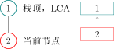
Ako LCA trenutačnog čvora i vrha stoga nije vrh stoga:
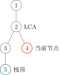
Tada je lanac koji monotoni stog trenutačno održava:
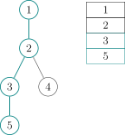
a trebamo lanac pretvoriti u:
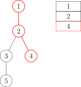
Dakle, čvorove označene isprekidanom linijom skinemo sa stoga; prije skidanja ne zaboravimo spojiti ih bridom s njihovim roditeljem u virtualnom stablu.
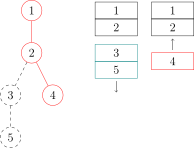
Ako nakon skidanja vrh stoga nije LCA, LCA stavimo na stog.
Zatim stavimo na stog trenutačni čvor.
Slijedi konkretan primjer. Pretpostavimo da za čvorove 4, 6 i 7 sljedećeg stabla gradimo virtualno stablo:
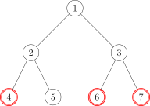
Koraci su sljedeći:
- Sortiramo 3 ključna čvora \(6,4,7\) po DFS poretku i dobijemo niz \([4,6,7]\).
- Stavimo \(1\) na stog.
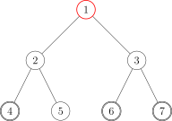
Crveni čvorovi označavaju čvorove u stogu, a tirkizni čvorove skinute sa stoga.
- Uzmemo prvi element niza kao trenutačni čvor, dakle \(4\). Uzmemo vrh stoga, \(1\). Izračunamo LCA od \(1\) i \(4\): \(LCA(1,4)=1\).
- Vidimo da je \(LCA(1,4)=\) vrh stoga, dakle na istom su lancu virtualnog stabla, pa trenutačni čvor \(4\) jednostavno stavimo na stog; stog je sada \(4,1\).
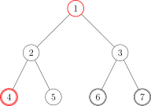
- Uzmemo drugi element niza kao trenutačni čvor, \(6\). Uzmemo vrh stoga, \(4\). Izračunamo LCA od \(6\) i \(4\): \(LCA(6,4)=1\).
- Vidimo da je \(LCA(6,4)\neq\) vrh stoga, ulazimo u fazu provjere.
- Faza provjere: DFS indeks vrha stoga \(4\) veći je od \(LCA(6,4)\), ali DFS indeks drugog najvećeg čvora (onog ispod vrha stoga) \(1\) jednak je LCA-u (jednaki DFS indeksi zapravo znače jednake čvorove), što znači da je LCA već na stogu; zato izravno spojimo brid \(1\to4\), odnosno brid od LCA-a do vrha stoga. I skinemo \(4\) sa stoga.
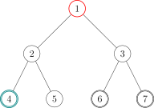
- Nakon faze provjere stavimo \(6\) na stog; stog je sada \(6,1\).
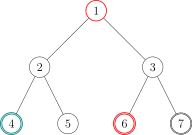
- Uzmemo treći element niza kao trenutačni čvor, \(7\). Uzmemo vrh stoga, \(6\). Izračunamo LCA od \(7\) i \(6\): \(LCA(7,6)=3\).
- Vidimo da je \(LCA(7,6)\neq\) vrh stoga, ulazimo u fazu provjere.
- Faza provjere: DFS indeks vrha stoga \(6\) veći je od \(LCA(7,6)\), ali DFS indeks drugog najvećeg čvora (onog ispod vrha stoga) \(1\) manji je od LCA-a, što znači da LCA još nije bio na stogu; zato izravno spojimo brid \(3\to6\), odnosno brid od LCA-a do vrha stoga. Skinemo \(6\) sa stoga i stavimo \(LCA(6,7)\) na stog.
- Nakon faze provjere stavimo \(7\) na stog; stog je sada \(1,3,7\).
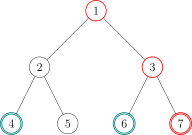
- Sva 3 čvora niza već su bila na stogu, izlazimo iz petlje.
- U stogu su još 3 čvora: \(1,3,7\); očito su na istom lancu, pa ih izravno spojimo bridovima \(1\to3\) i \(3\to7\).
- Virtualno stablo je izgrađeno!
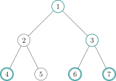
Uklonimo li zatim čvorove koji nikad nisu bili na stogu (netirkizne čvorove), odgovarajuće virtualno stablo izgleda ovako:
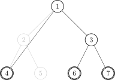
Ima mnogo detalja; primjerice, ako virtualno stablo pohranjujemo listom susjedstva, listu treba isprazniti. No pražnjenje cijele liste susjedstva vrlo je sporo, pa ispraznimo listu susjedstva elementa u trenutku kad element koji nikad nije bio na stogu prvi put stavljamo na stog.
Vremenska složenost također je \(O(m\log n)\) (zbog sortiranja), gdje je \(m\) broj ključnih čvorova, a \(n\) ukupan broj čvorova.
Implementacija
C++ kôd za konstrukciju virtualnog stabla izgleda otprilike ovako:
Implementacija
bool cmp(const int x, const int y) { return id[x] < id[y]; }
void build() {
sort(h + 1, h + k + 1, cmp);
sta[top = 1] = 1, g.sz = 0, g.head[1] = -1;
// čvor 1 na stog, isprazni listu susjedstva čvora 1, postavi broj bridova liste na 0
for (int i = 1, l; i <= k; ++i)
if (h[i] != 1) {
// ako je čvor 1 ključni čvor, ne dodaj ga ponovno
l = lca(h[i], sta[top]);
// izračunaj LCA trenutačnog čvora i vrha stoga
if (l != sta[top]) {
// ako se LCA razlikuje od vrha stoga, trenutačni čvor nije na lancu koji stog trenutačno čuva
while (id[l] < id[sta[top - 1]])
// dok je Dfs indeks drugog najvećeg čvora veći od Dfs indeksa LCA-a
g.push(sta[top - 1], sta[top]), top--;
// spoji i skini lanac koji se ne preklapa s lancem trenutačnog čvora
if (id[l] > id[sta[top - 1]])
// ako LCA nije jednak drugom najvećem čvoru (ovdje se „veće” ne razlikuje od „različito”)
g.head[l] = -1, g.push(l, sta[top]), sta[top] = l;
// LCA je prvi put na stogu: isprazni mu listu susjedstva, spoji brid, skini vrh stoga i stavi LCA
// na stog
else
g.push(l, sta[top--]);
// LCA je upravo drugi najveći čvor, samo skini vrh stoga
}
g.head[h[i]] = -1, sta[++top] = h[i];
// trenutačni čvor sigurno je prvi put na stogu: isprazni listu susjedstva i stavi ga na stog
}
for (int i = 1; i < top; ++i)
g.push(sta[i], sta[i + 1]); // spoji preostali posljednji lanac
return;
}
Tako smo naučili graditi virtualno stablo!
Za zadatak Rat iscrpljivanja dovoljno je na virtualnom stablu pokrenuti DP s početka; virtualnim stablom smo zapravo izbacili beskorisne neključne čvorove! I dalje promatramo svu djecu \(v\) čvora \(i\):
- ako \(v\) nije ključni čvor: \(Dp(i)=Dp(i) + \min \{Dp(v),w(i,v)\}\)
- ako \(v\) jest ključni čvor: \(Dp(i)=Dp(i) + w(i,v)\)
I tako je zadatak lako riješen.
Preporučeni zadaci
Contents
Introduction
"SDOI2011" War of Attrition
In a war, the battlefield consists of \(n\) islands and \(n-1\) bridges, and it is guaranteed that there is exactly one path between any two islands. Our army has found out that the enemy headquarters is on the island numbered \(1\) and that they no longer have enough energy to sustain the fight; victory is in sight. It is known that \(k\) other islands are rich in energy; to prevent the enemy from obtaining energy, our army's task is to blow up some bridges so that the enemy cannot reach any energy-rich island. Since bridges differ in material and structure, blowing up different bridges has different costs, and our army wants to achieve the goal with the minimum total cost.
The reconnaissance department also found that the enemy has a mysterious machine. Even after we cut off all energy, they can use that machine. Its effect not only repairs all the bridges we blew up, but also redistributes the resources at random (though it is guaranteed that resources will not be placed on island \(1\)). However, the reconnaissance department also found that this machine can only be used \(m\) times, so we just need to complete each task.
For all data, \(2\le n\le 2.5\times 10^5,1\le m\le 5\times 10^5,\sum k_i\le 5\times 10^5,1\le k_i\le n-1\).
Naive approach
For the problem above, it is not hard to see that if the tree has few nodes, we can directly run a DP.
First, we call the nodes selected in a query the "key nodes".
Let \(Dp(i)\) denote the minimum cost to make \(i\) not connected to any key node in its subtree.
Let \(w(a,b)\) denote the weight of the edge between \(a\) and \(b\).
Then, enumerating the children \(v\) of \(i\):
- if \(v\) is not a key node: \(Dp(i)=Dp(i) + \min \{Dp(v),w(i,v)\}\);
- if \(v\) is a key node: \(Dp(i)=Dp(i) + w(i,v)\).
Great, this gives us an \(O(nq)\) solution.
Sounds interesting.
Optimized approach
It is not hard to notice that many nodes are actually useless. Take the figure below as an example:
If the key nodes we select are:
In the figure only the two red nodes are key nodes, and all other nodes are "non-key nodes".
For this problem, we only need to ensure that the red nodes cannot reach node \(1\).
By inspection we can conclude that the right subtree of node \(1\) (although there may actually be several subtrees, here there are only two, so we call it that for now) does not contain a single red node, so there is no need to DP on it.
Looking at the constraints of the problem, the total number of red nodes (key nodes) is of the same order as \(n\), which means that in a single query the red nodes are actually very sparse with respect to the whole tree, so it would be nice if we could make the complexity depend on the total number of red nodes.
Therefore we need to condense the information, condensing a whole big tree into a small tree.
Virtual Tree
This brings us to the concept of the "virtual tree".
Let us first look intuitively at what a virtual tree looks like.
In the figures below, the red nodes are the key nodes we selected. Both red and black nodes are nodes of the virtual tree. The black edges are the edges of the virtual tree.
Since the LCA of any two key nodes also carries important information that needs to be kept, we need to keep their LCAs too, so the virtual tree does not necessarily contain only key nodes.
It is not hard to see that the ancestor-descendant relationships in the virtual tree do not change. (That is, nothing weird happens like \(a\) originally being an ancestor of \(b\) and later \(a\) becoming a descendant of \(b\).)
But we cannot enumerate the LCAs by brute force in \(O(k^2)\), so it is natural to think of the following: first sort the key nodes by DFS order, then compute the LCA of every two adjacent key nodes (adjacent meaning that the absolute difference of their indices in the sorted sequence equals 1), and add it to the virtual tree.
Our top priority is how to construct the virtual tree.
Before proposing a method, let us first confirm a fact: in the virtual tree, as long as the ancestor-descendant relationships are not changed, nodes can be added arbitrarily.
That is, if we wanted to, we could add all nodes of the original tree into the virtual tree without getting WA (although it would cause TLE).
Therefore, for convenience, we can first add node \(1\) to the virtual tree, which does not affect the answer.
First construction method: sort twice + connect via LCA
Since the LCA of several nodes may be the same node, we must not add it to the virtual tree multiple times.
A very intuitive method is:
- sort the key nodes by DFS order;
- traverse once, compute the LCA of every two adjacent key nodes, and remove duplicates;
- then build the tree according to the ancestor-descendant relationships in the original tree.
In the implementation, on the sequence of key nodes, enumerate every two adjacent elements, compute their LCA pairwise, and add it to the sequence \(A\).
Because of the properties of the DFS order, the sequence \(A\) now already contains all nodes of the virtual tree, but possibly with duplicates.
So we sort the sequence \(A\) by DFS order in increasing order and remove duplicates.
Finally, on the sequence \(A\), enumerate adjacent pairs of node indices \(x,y\), compute their LCA and connect \(\operatorname{LCA}(x,y),y\); the virtual tree is then constructed.
Why does connecting \(\operatorname{LCA}(x,y)\) and \(y\) neither miss nor duplicate anything?
Proof
If \(x\) is an ancestor of \(y\), then \(x\) is connected directly to \(y\). Since the DFS order guarantees that the DFS indices of \(x\) and \(y\) are adjacent, there is no key node on the path from \(x\) to \(y\).
If \(x\) is not an ancestor of \(y\), then treat \(\operatorname{LCA}(x,y)\) as an ancestor of \(y\); by the previous case it can also be proved that there is no key node on the path from \(\operatorname{LCA}(x,y)\) to \(y\).
Therefore connecting \(\operatorname{LCA}(x,y)\) and \(y\) neither misses nor duplicates anything.
Also, does it matter that the first node is not connected to by any node? Since the first node must be the root of this tree, it does not matter, so the total number of edges is \(m-1\).
Since at least two real nodes are needed to "summon" one virtual node, plus one root node, the number of nodes of the virtual tree is at most twice the number of real nodes.
Time complexity \(O(m\log n)\), where \(m\) is the number of key nodes and \(n\) the total number of nodes.
Implementation
int dfn[MAXN];
int h[MAXN], m, a[MAXN], len; // stores the key nodes
bool cmp(int x, int y) {
return dfn[x] < dfn[y]; // sort by dfs order
}
void build_virtual_tree() {
sort(h + 1, h + m + 1, cmp); // sort the key nodes by dfs order
for (int i = 1; i < m; ++i) {
a[++len] = h[i];
a[++len] = lca(h[i], h[i + 1]); // insert the lca
}
a[++len] = h[m];
sort(a + 1, a + len + 1, cmp); // sort all nodes of the virtual tree by dfs order
len = unique(a + 1, a + len + 1) - a - 1; // remove duplicates
for (int i = 1, lc; i < len; ++i) {
lc = lca(a[i], a[i + 1]);
conn(lc, a[i + 1]); // add the edge; if there are edge weights, it is distance(lc,a[i+1])
}
}
This is actually enough to construct a virtual tree.
Second construction method: using a monotonic stack
How to construct a virtual tree with a monotonic stack?
First we need to clarify a goal: we use the monotonic stack to maintain a chain of the virtual tree.
That is, two adjacent nodes in the stack are also adjacent in the virtual tree, and the stack is monotonically increasing from bottom to top (meaning the DFS indices of the nodes in the stack increase monotonically); simply put, the parent of a node is the node below it in the stack.
First we add node \(1\) to the stack.
Then we add the key nodes in increasing DFS order.
If the LCA of the current node and the top of the stack is the top of the stack itself, then they are on the same chain. So we simply push the current node onto the stack.
If the LCA of the current node and the top of the stack is not the top of the stack:
At this moment, the chain maintained by the monotonic stack is:
and we need to turn the chain into:
So we just pop the nodes marked with dashed lines from the stack; before popping, do not forget to add the edge to their parent in the virtual tree.
If after popping the top of the stack is not the LCA, push the LCA onto the stack.
Then push the current node onto the stack.
A concrete example follows. Suppose we want to build a virtual tree for nodes 4, 6 and 7 of the following tree:
Then the steps are as follows:
- Sort the 3 key nodes \(6,4,7\) by DFS order, obtaining the sequence \([4,6,7]\).
- Push \(1\) onto the stack.
We use red nodes to represent nodes in the stack, and cyan nodes to represent nodes popped from the stack.
- Take the first element of the sequence as the current node, namely \(4\). Take the top of the stack, which is \(1\). Compute the LCA of \(1\) and \(4\): \(LCA(1,4)=1\).
- We find \(LCA(1,4)=\) the top of the stack, which means they are on one chain of the virtual tree, so we directly push the current node \(4\) onto the stack; the stack is now \(4,1\).
- Take the second element of the sequence as the current node, \(6\). Take the top of the stack, \(4\). Compute the LCA of \(6\) and \(4\): \(LCA(6,4)=1\).
- We find \(LCA(6,4)\neq\) the top of the stack, so we enter the checking phase.
- Checking phase: the DFS index of the top node \(4\) is greater than \(LCA(6,4)\), but the DFS index of the second node (the one below the top) \(1\) equals the LCA (equal DFS indices actually mean equal nodes), which means the LCA is already in the stack, so we directly add the edge \(1\to4\), i.e. the edge from the LCA to the top of the stack. And pop \(4\) from the stack.
- After the checking phase, push \(6\) onto the stack; the stack is now \(6,1\).
- Take the third element of the sequence as the current node, \(7\). Take the top of the stack, \(6\). Compute the LCA of \(7\) and \(6\): \(LCA(7,6)=3\).
- We find \(LCA(7,6)\neq\) the top of the stack, so we enter the checking phase.
- Checking phase: the DFS index of the top node \(6\) is greater than \(LCA(7,6)\), but the DFS index of the second node (the one below the top) \(1\) is less than the LCA, which means the LCA has never been in the stack, so we directly add the edge \(3\to6\), i.e. the edge from the LCA to the top of the stack. Pop \(6\) from the stack and push \(LCA(6,7)\) onto the stack.
- After the checking phase, push \(7\) onto the stack; the stack is now \(1,3,7\).
- All 3 nodes of the sequence have been pushed onto the stack, so we exit the loop.
- There are still 3 nodes in the stack: \(1,3,7\); they are obviously on one chain, so we directly add the edges \(1\to3\) and \(3\to7\).
- The virtual tree is built!
Next, if we delete the nodes that were never in the stack (the non-cyan nodes), the corresponding virtual tree looks like this:
There are many details; for example, if the virtual tree is stored with adjacency lists, the adjacency lists need to be cleared. But clearing the whole adjacency list directly is very slow, so we clear the adjacency list of an element at the moment an element that has never been in the stack is pushed.
The time complexity is again \(O(m\log n)\) (because of the sorting), where \(m\) is the number of key nodes and \(n\) the total number of nodes.
Implementation
The C++ code for building the virtual tree looks roughly like this:
Implementation
bool cmp(const int x, const int y) { return id[x] < id[y]; }
void build() {
sort(h + 1, h + k + 1, cmp);
sta[top = 1] = 1, g.sz = 0, g.head[1] = -1;
// push node 1, clear the adjacency list of node 1, set the edge count of the adjacency list to 0
for (int i = 1, l; i <= k; ++i)
if (h[i] != 1) {
// if node 1 is a key node, do not add it again
l = lca(h[i], sta[top]);
// compute the LCA of the current node and the top of the stack
if (l != sta[top]) {
// if the LCA differs from the top of the stack, the current node is not on the chain currently stored in the stack
while (id[l] < id[sta[top - 1]])
// while the Dfs index of the second node is greater than the Dfs index of the LCA
g.push(sta[top - 1], sta[top]), top--;
// connect and pop the chain that does not overlap with the chain of the current node
if (id[l] > id[sta[top - 1]])
// if the LCA is not equal to the second node (here "greater than" is no different from "not equal")
g.head[l] = -1, g.push(l, sta[top]), sta[top] = l;
// the LCA is pushed for the first time: clear its adjacency list, add the edge, pop the top and push the LCA
// onto the stack
else
g.push(l, sta[top--]);
// the LCA is exactly the second node, just pop the top of the stack
}
g.head[h[i]] = -1, sta[++top] = h[i];
// the current node is certainly pushed for the first time: clear its adjacency list and push it
}
for (int i = 1; i < top; ++i)
g.push(sta[i], sta[i + 1]); // connect the remaining last chain
return;
}
And so we have learned how to build a virtual tree!
For the problem War of Attrition, just run the DP described at the beginning on the virtual tree; we have effectively used the virtual tree to exclude the useless non-key nodes! Still consider all children \(v\) of \(i\):
- if \(v\) is not a key node: \(Dp(i)=Dp(i) + \min \{Dp(v),w(i,v)\}\)
- if \(v\) is a key node: \(Dp(i)=Dp(i) + w(i,v)\)
And so this problem is easily solved.